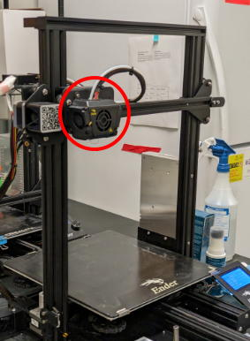
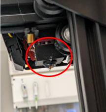
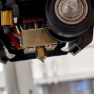
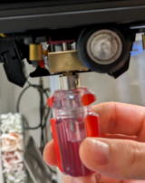
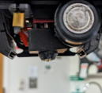
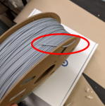

3Dプリンタの取り扱い
フィラメントの交換
1. Control→Temperature→Nozzleでノズルの温度を印刷時の温度まで上げ、フィラメントを引っ張り、フィラメントを抜きます。
2. 新たなフィラメントをセットてノズルの温度を戻します。
ノズルの交換
Prepare→Move Axis→Move Zでノズルヘッドを作業しやすいように上げます。

ノズルヘッドのゴムカバーを外します。


Control→Temperature→Nozzleでノズルの温度を印刷時の温度まで上げます。
この時フィラメントがセットされていたら抜いて下さい。
ボックスレンチでノズルを反時計回りに回して外して新しい0.4mmのノズルを装着してください（締め付けが緩いとフィラメントが漏れてノズルヘッドが使用不能になる場合があるので注意してください）。

ノズルの温度を下げてゴム化バーをはめたら完了です。

3Dプリンタ豆知識
・ノズルは大体100時間ぐらいで詰まるため、何時間使ったかログを取って把握した方がよい。
・のりは印刷後に水で洗い流せる
・スプールが入っていたビニール袋は保存時にまた使うため捨てない方が良い。
・スプールの重さを把握していれば計りでフィラメントの残量が分かる。
・スプールのフィラメントの端は常にスプールの穴に止めておく。止めないと絡まりが発生して印刷が失敗するリスクが出る。

・印刷中にスプールが切れたら基本的に印刷は失敗する（スプール切れ検出機能があっても）。
・印刷前にベッドを手動で温めておくとタイムラグが減る。
・FDM方式では原理的に印刷速度を上げると造形物が汚くなるため、印刷速度を上げたい場合安いプリンターを複数台買う方が合理的。
・もし印刷物から沢山糸が出ている場合、フィラメントの温度が高すぎるのでノズル温度を下げてください。
・印刷条件が適切でないとチャンバーの底面などの平面を印刷する際に隙間ができることがあります。この隙間は臭いをトラップしたりカビの原因になります。以下の原因が考えられるので対処してください。
- 実際のフィラメントがカタログ値より細い → 多くのプリンタでは印刷中にExtruderの送り出し量を調整する機能があるので、それで送り出し量を数%増やす(Ender3 Maxの場合はflow値を増やす)
- ノズル温度が低くフィラメントが溶け残り、送り出しの抵抗になり十分な量のフィラメントが出てない → ノズル温度を5度程上げてみる
- ノズルが詰まりかけている → ノズル交換
チューブ継手のツメが立たなくなったら反対側からチューブを押し込むとツメが立つ